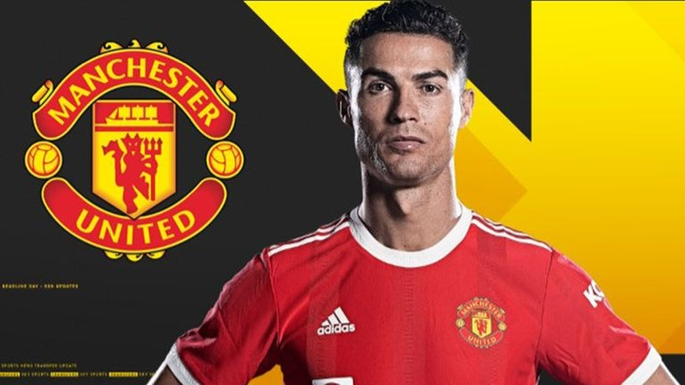

Ruining Teammates & Coaches — Juve & United Decline
Juve's streak broken: When Ronaldo landed at Juventus in 2018 for €100M, the Old Lady wanted him to deliver the Champions League. It backfired spectacularly — during his tenure Juve went out in the Champions League round of 16 for two straight years, and far more damaging, his arrival ended their nine-year Serie A title streak. A 'UCL saviour' became the dynasty-killer instead.
Sacrificing Dybala: The most obvious collateral damage was Paulo Dybala. Once Ronaldo arrived Juve rebuilt the attack around him, and Dybala's tactical role, share of the ball and minutes were all sharply curtailed. Legend Tardelli said straight out that 'Dybala suffered because of Ronaldo's presence'; Dybala's market value once dropped €10-15M, a golden boy run into the ground.
The offside that killed a wonder-goal: Dybala once complained Ronaldo was 'difficult to play with'. Most heartbreaking was a 2018 moment when Dybala's breathtaking solo strike — bound for goal of the season — was chalked off because Ronaldo interfered with the keeper from an offside position; a teammate's brilliance reduced to background music for the star, absurdly so.
The United return: In summer 2021 Ronaldo returned to Manchester United — and it was just as disastrous. Solskjær was sacked for being unable to fit him tactically, and the team slid from 2nd in the Premier League the prior season to 6th, missing the Champions League again. Ronaldo's personal numbers were fine but United's overall balance collapsed and the dressing room split — with him, they were weaker, an indisputable fact.
Dragging down systems: Whether at Juve or United, the common feature of Ronaldo's arrival was: the whole team had to play around him, the attacking tempo slowed, defending effectively with ten, and young players' development was stunted. The manager was forced to sacrifice the collective, the system gave way for him with no payback — what critics call textbook 'superstar-dependency syndrome'.
Blowback on himself: Most ironically, wherever Ronaldo went the club's results collectively slumped — Juventus went from ruling Serie A to scrambling for top-four, United from title contenders to sixth-place. The myth that he 'brought a 1-0 lead' was shattered, and the superstar effect ultimately backfired on the team. This 'team-wrecker' dark history remains a powerful exhibit against his historical standing.
The Cristiano factor: For the critics, the pattern is clear: Cristiano arrives, teammates suffer, the books unravel, and the club ends up worse than before. The «team-breaker» in action.